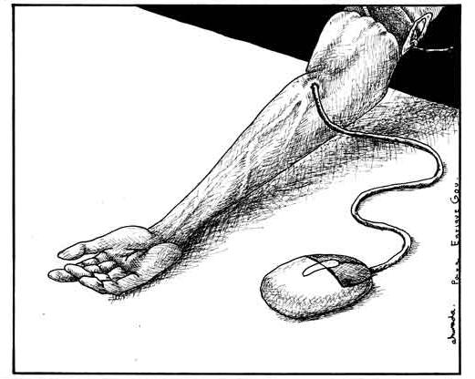

By many articles written, published, and discoverable via Google and other search engines, searches for this specific topic is always found in a very negative tone, almost as if technology itself is a cancer we enable to metastasize. Just three links down from the search bar and an article listing off many harmful side effects is displayed ranging from excessive smartphone use, to development in children issues, to poor sleeping habits.
Is this very much an issue where we must become cautious as to stay away from technological uses as critically as possible?

Fusce a pellentesque turpis. Proin pulvinar semper odio sit amet venenatis. Mauris tristique at ante vitae bibendum. Donec eu cursus nulla. Curabitur ullamcorper a felis a varius. Suspendisse sollicitudin aliquet maximus. Orci varius natoque penatibus et magnis dis parturient montes, nascetur ridiculus mus. Nunc consequat suscipit ipsum, sed condimentum nunc. Nulla nulla nisl, vehicula a nibh et, elementum dictum elit. Praesent nibh eros, condimentum et felis quis, rutrum faucibus urna. Nullam ultricies a magna id tempus.
Our dependence on technology has removed our need to handle life's small issues with any level of uncertainty. This seems like a great benefit at first but now when faced with lifes big things like finding a career or love, we no longer feel prepared to handle the heavier emotion of these decisions.
When we’re accustomed to taking our time to think of exactly what we want to say, we find it harder to do it face-to-face and on the fly. And of course, when there’s less real-time experience to draw on, we stay shaky and uncertain, which in turn makes us anxious. (Hendriksen)
Nobody can blame you for wanting to avoid the crowd but technology has allowed us to avoid contact with others as a default experience. As we interact with others with less frequency, we increasingly assume worst case scenarios and have reduced confidence in our own ability to interface with others.
Social media has become a platform to highlight and magnify everything we have been told to keep to ourselves. Politcs, sexuality, and religion are polarizing topics and now are in the open to be scrutinized not only by our close friends and family but also the world. Technology has solved many of lifes problems but now it is creating new ones; or at least bringing existing ones out into the open. The algorithms put in place by the people building these platforms further divide us as it helps put us in a box with like minded folks. One could argue at first that this is great to find a social circle of people that feel the same as you do but when you lose the other perspective, anxiety builds quickly once you are reintroduced to the other side.
As society becomes more aware of the consequences of spending hours of time each day on our phones, tablets, and computers there is a growing movement to pushback against the pull of technology. The writer Blake Snow has called this movement “reformed luddism”: a society that views tech with a sceptical eye, noting the benefits while recognising that it causes problems, too. (Bartlett)
This pushback can take many forms:
What is the first thing you do when you wake up in the morning? What do you use to brew your coffee so you can stay awake and what plays the music or the news in the background while you make your breakfast? What do you pull out for GPS when the road you normally take to work is closed? What is the first thing you sit down to when you get to work?
If you answered these questions with these answers:
Then you now might think that you actually do have an addiction to technology or that you are literally surrounding your life with your smartphone and covered up in a blanket of perfect convenience which hinders the human side of you that blah blah blah.
There is this ongoing notion that has the tech world and psychology always fighting: the overexposure of technology is taking a hard toll in everyday life. No matter how the question is asked via Google search, the results will always leave the person asking with a sour taste in their mouth in regards to their own apparent personal issues with their smartphone and other devices as stated by many websites and tech "gurus".
Technology does allow the convenience of the entire world’s information at the palm of our hands with knowledge of good and evil, but that is up to the user to decide and to control themselves. To denounce the practical use of technology whether it’s a smartphone, your computer etc as a general and public issue is unjustifiable as those negative effects are caused by that specific individual in their own unique situations.
These useful tools that we all view so negatively towards not only gives us the amazing tool of the internet, but access to a high resolution camera, a storage and streamer for music and video, a mobile phone to be used for calls and texting, and more. That is all that a mobile phone is, a tool and to blame such a tool for the individual human’s incapability to control themselves from overusing their device is and should not be a viable statement. This mindset is not only targeted to smartphones, but towards all intelligent devices, but that’s where a lot of these arguments against the machines become a bit dodgy. Such powerful uses for these tools range from a coffee maker and rice cooker down to medical nanobots used to patch wounds within the human body and even the systems that hold our money and transfer it, yes I’m talking about banks, They use a very specific network that allows for real time access to each and every bank to virtually send money from one to another. Even the fact that we have these two wheeled overhyped items called the “hoverboard” is a great feat in of itself because it demonstrates how far we’ve come to be able to provide these machines as toys to the masses whether it’s a useful or just an enjoyable thing. This is all overlooked when we go back to the topic of: “The impact of technology dependence”.
The world we now live in revolves around the very thing we are starting to hate because we only now are becoming fully aware of it’s sheer power over us and our weak minds. Technology as advanced as what every abled body can now obtain has only existed within the last 50 years, maybe less; and it’s because of how fast the world is moving currently thanks to the assistance of these intelligent machines which also has our own minds slowed down to the point of portraying our addiction to be the fault of the machines, but when really it’s us humans who should learn how to utilize and not idolize our own creation.
Hendricksen, Ellen. "How Technology Makes Us Anxious". Psychology Today. March 27, 2018
Kinetics, Human. “Technology Can Have Positive and Negative Impact on Social Interactions.” Human Kinetics,
Capistrano, Jon. “Are We Too Dependent on Technology?” XEN Life, XEN Life, 6 Nov. 2017,